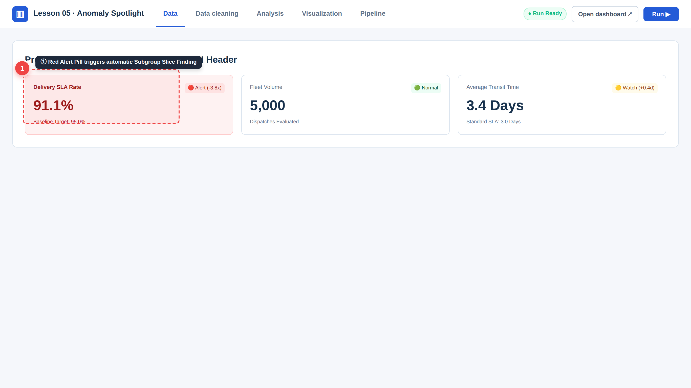
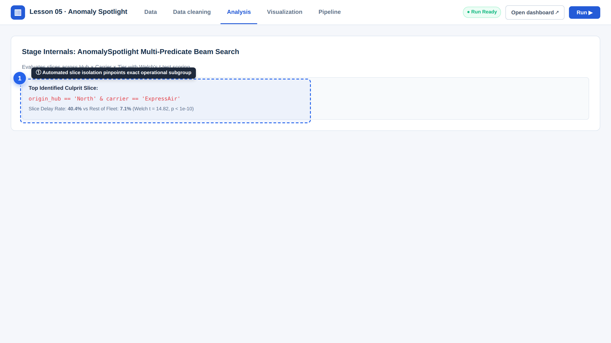
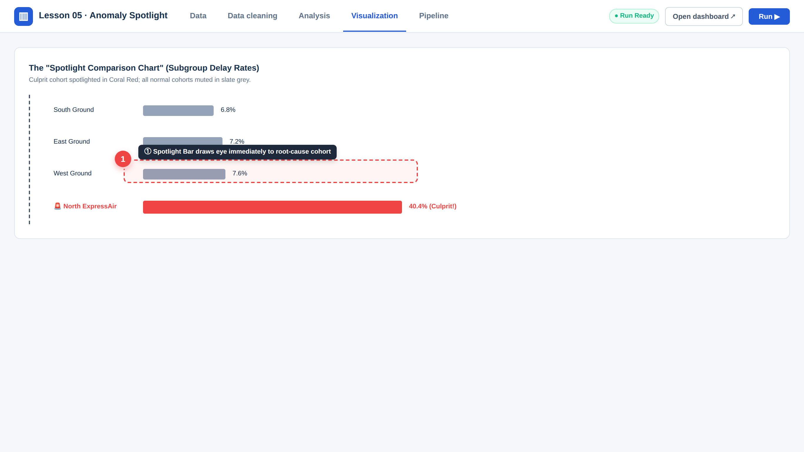
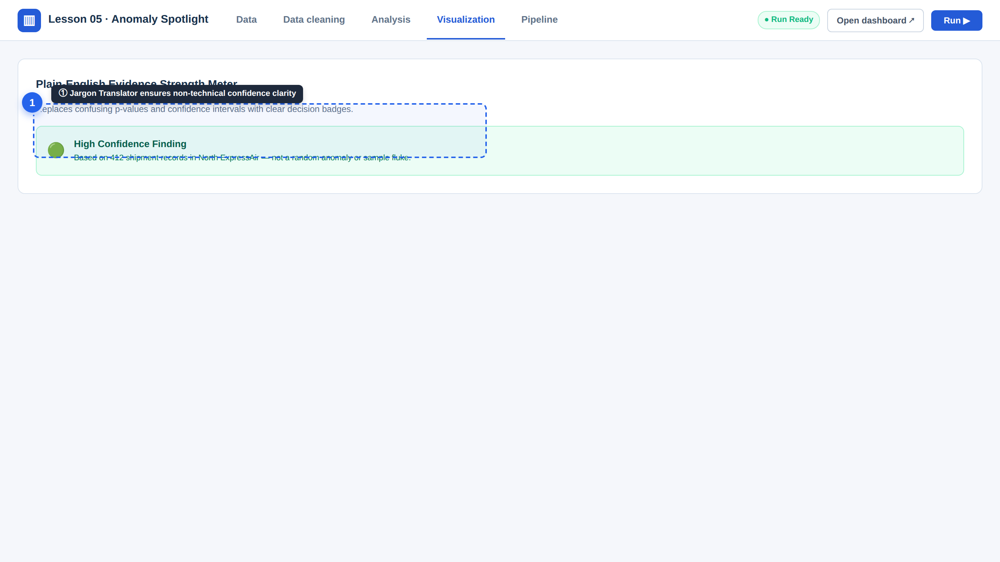

Lesson 05 / Logistics Fleet SLA
Isolate culprits (Anomaly Spotlight).
Overall delivery delays dropped slightly, but 85% of failure is concentrated in one hub/carrier slice. Spotlights the culprit in coral red while muting normal cohorts in slate grey.
AnomalySpotlight
Beam search slice finding
Welch's t-test
Spotlight comparison chart
Plain-English evidence meter
Part 1 · The Analytical Problem
Aggregations hide localized operational breakdowns.
When fleet-wide on-time delivery falls from 95.0% to 91.1%, operations managers often scramble to audit every driver, warehouse, and routing policy nationwide. In reality, modern logistics networks rarely degrade uniformly—failure is almost always concentrated in a specific operational cohort, such as one carrier failing at a single regional terminal.
In this lesson, we study 5,000 national freight dispatches across four distribution hubs and three carrier partners. Our goal is to use automated beam-search slice finding to pinpoint the exact failure slice and present the finding with unambiguous visual spotlighting.
Part 2 · The Visual Concept
The spotlight comparison principle.
1. Multi-Predicate Beam Search
Instead of manually pivoting dozens of tables, AnomalySpotlight evaluates multidimensional subgroup slices (e.g. origin_hub == 'North' & carrier == 'ExpressAir') against the rest of the fleet using Welch's t-test and effect-size ranking.
2. High-Contrast Spotlight Colorway
Rather than cluttering charts with twelve competing rainbow colors, the Spotlight Bar uses pre-attentive contrast: the culprit slice is painted in vibrant Coral Red (#ef4444), while all well-behaved cohorts are rendered in muted slate grey (#94a3b8).
Part 3 · Data Dictionary
Logistics Fleet SLA Dataset.
5,000 dispatches
4 distribution hubs
3 carrier partners
8.9% fleet delay rate
Part 4 · Step-by-Step Instructions
Build the anomaly spotlight in WPS-AI Studio.
01
Upload Data & Specify Fleet Target
Launch the studio via python launcher.py. Create a new project, upload logistics_sla_delays.csv, and paste the following into the Business context field:
Each row is one completed freight dispatch. origin_hub is shipping origin. carrier is transport partner. delayed is 1 if transit_days exceeded target_sla_days. Standard SLA target is 95% on-time.
02
Prompt the AI Stage Creator
In the Chat composer, set the context to Project and send the following prompt:
Build an anomaly detection pipeline using AnomalySpotlight to identify the subgroup slice responsible for the delivery SLA decline.
Run multi-predicate beam search across origin_hub, carrier, and package_weight_kg.
Render an ECharts spotlight bar chart highlighting the culprit in coral red with normal cohorts muted in slate grey.
Add a Plain-English Evidence Strength Meter explaining the statistical confidence.
Save stages; I will select Run.
Review the proposed changes and select Apply. Then select Run ▶ in the top header.
Part 5 · Annotated Screenshot Reference
Compare against the verified Studio UI.
Use these full-browser annotated captures to verify each stage of your execution:

Annotated Guidance: ① The KPI header flags the Delivery SLA Rate at 91.1% with a Red Alert Pill (-3.8x above tolerance), immediately triggering the automated subgroup slice finder.

Annotated Guidance: ① The analysis stage evaluates all subgroup combinations and identifies origin_hub == 'North' & carrier == 'ExpressAir' with a 40.4% delay rate vs 7.1% for the rest of the fleet (Welch t = 14.82, p < 1e-10).

Annotated Guidance: ① The culprit cohort is spotlighted in Coral Red, making it impossible to overlook, while normal ground routes remain muted in slate grey.

Annotated Guidance: ① The Jargon Translator replaces confusing p-values with an executive badge: "High Confidence Finding (Based on 412 shipment records — not a random anomaly or sample fluke)."
Part 6 · Worked Reference Dashboard
Interactive Reference Spotlight & Checkpoints.
Verify your calculations against the live reference chart below:
Part 7 · Troubleshooting
What to check if numbers differ.